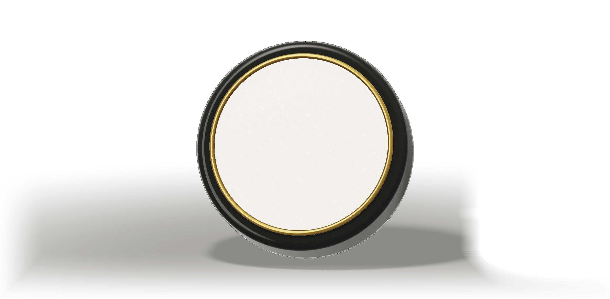
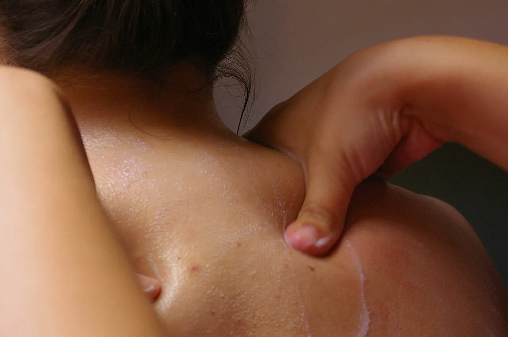

קרם ארניקה טבעי לשרירים ולמפרקים
קרם צמחי לעיסוי, שיהושע אלישע רוקח ביד בקליניקה שלו בפתח תקווה. ארניקה, מור, מנטה וקמפור על בסיס שיאה. 50 מ״ל ב־₪120.
שלושת הקרמים של JE
כל קרם נרקח לתפקיד אחר. בהזמנה מ־₪300 המשלוח חינם.
מה כתבה לקוחה על קרם הארניקה
ישנתי תחת מזגן, ובאמצע הלילה התעוררתי מכאבים במפרק האגן. ניסיתי כל מיני דברים עד שנזכרתי במשחה, ורק אחריה הכל נרגע.
ארניקה היא צמח הרים, והקרם בנוי סביבה
קרם ארניקה הוא קרם לעיסוי שמבוסס על ארניקה הררית (Arnica montana), צמח ממשפחת המורכבים שגדל בכרי הרים באירופה. ברפואה העממית משתמשים בו לעיסוי אחרי מכות ומאמץ.
- בקרם של JE הארניקה פוגשת מור, מנטה וקמפור, על בסיס חמאת שיאה ושמן זית
- נבדק דרמטולוגית לעור רגיש
- 50 מ״ל בצנצנת זכוכית ענבר, לשימוש חיצוני
איך מורחים קרם ארניקה
-
פותחים ולוקחים כמות קטנה
כמות בגודל אפונה מספיקה לאזור אחד. מחממים אותה רגע בין האצבעות.

-
מעסים שתיים־שלוש דקות
בתנועות מעגליות על המקום הכואב, עד שהקרם נספג. בגב ובכתפיים, לחיצה עם האגודל לאורך השריר.

-
חוזרים פעם או פעמיים ביום
על עור שלם בלבד. לפני השינה זה זמן טוב לגב ולברכיים. המדריך לפי אזור בגוף
שישה רכיבים מרכזיים
צמחי מרפא ושמנים אתריים, על בסיס של חמאת שיאה ושמן זית.

- ארניקה
צמח הרים שמשמש לעיסוי אחרי מכות ומאמץ.
- מור
שרף עתיק ששימש לטיפוח העור ולהרגעתו.
- מנטה
תחושת קרירות על העור בזמן העיסוי.
- קמפור
תחושת חום עדינה שנשארת אחרי המריחה.
- חמאת שיאה
מרככת את העור ומגינה על עור יבש.
- שמן זית
שומר על הלחות של העור.
שאלות על קרם ארניקה
לא מצאתם תשובה? יהושע עונה בעצמו.
למה קרם ארניקה מתאים?
לעיסוי של שרירים תפוסים, עומס אחרי פעילות, גב, צוואר, כתפיים ומפרקים. זה מוצר קוסמטי: הוא לא מחליף בדיקה או טיפול אצל רופא.
מה ההבדל בין קרם לג׳ל ארניקה?
ג׳ל נספג מהר ומשאיר מעט שומן. קרם על בסיס שיאה ושמן זית עשיר יותר, ונשאר על העור מספיק זמן לעיסוי של כמה דקות.
זה מתאים לעור רגיש?
הקרם נבדק דרמטולוגית לעור רגיש. הוא לשימוש חיצוני בלבד, ולא מורחים אותו על עור פצוע.
אפשר בהריון או לילדים?
לפני שימוש בהריון, בהנקה או אצל ילדים קטנים, כתבו ליהושע ותקבלו תשובה אישית.
כמה עולה המשלוח?
בהזמנה מ־₪300 המשלוח חינם. בהזמנה קטנה יותר, עלות המשלוח מופיעה בקופה לפני התשלום.
הזמנה מהחנות של יהושע
בחרו כמות. התשלום מתבצע בחנות המאובטחת של האתר.